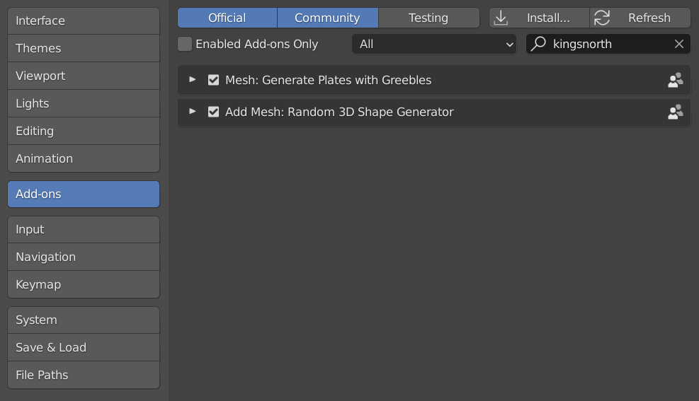
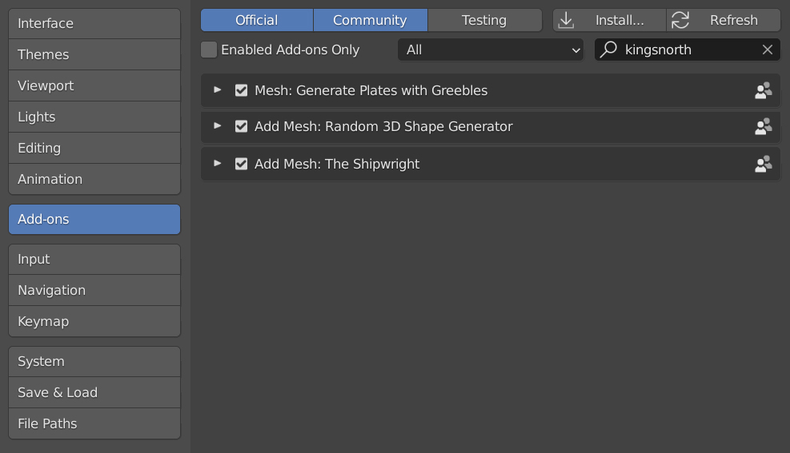

Installation
Before you start
Before you install the Shipwright zip file into Blender, you’ll need to install both the Plating Generator and Shape Generator add-ons.
You can do this by installing their latest Blender add-on zip files via the Add-Ons tab under the Edit -> Preferences menu in Blender 2.93 or above:
Plating Generator: plating_generator_greebles.zip
Shape Generator: shape_generator.zip
Detailed instructions on how to install is available from the links above.
Your set up should be as follows:
Main Installation
Go to Edit -> Preferences.
Select the Add-ons tab on the left it is not already.
Select the Install… button along the top.
This will open a file dialog where you should navigate to where you have downloaded the “Shipwright” zip file. This file should not be unzipped.
Then, click the Install add-on from file button.
Search for the add-on by typing Shipwright in the search box if it does not already appear.
Make sure the checkbox next to the Add-on (Add Mesh: Shipwright) is ticked.
Your set up should be as follows:
